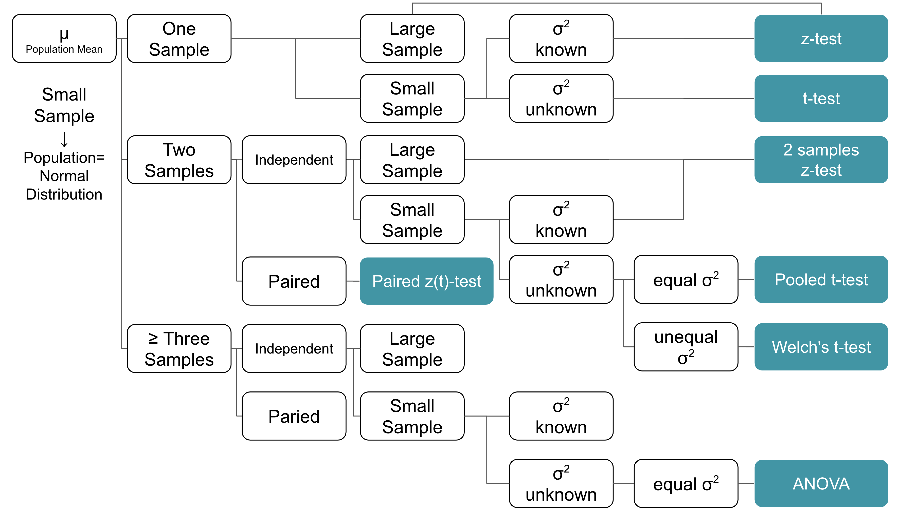
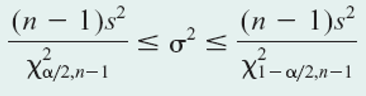

import statistics as st
import pandas as pd
import seaborn as sns
import random
from scipy import stats
import numpy as np
import math
import statsmodels.stats.power as power
from statsmodels.stats.weightstats import ztest as ztest
from statsmodels.stats.proportion import proportions_ztest as proportions_ztest
from statsmodels.stats.proportion import proportion_confint as proportion_confintDecision Making for a Single Sample
Yi-Ju Tseng
Import Packages and Data
Packages installation
In CMD (Windows) or terminal (Mac or Linux), type
pip3 install statsmodels randomto install packages
Of course you can use conda or other method to install packages
Import packages
We will use the following packages in python.
statistics,pandas,seaborn,numpy,random,math,statsmodels,scipy
Import data
Import data and analyze with python using pandas. pd.read_csv("file path + name")
| name | handedness | height | weight | bavg | HR | |
|---|---|---|---|---|---|---|
| 0 | Jose Cardenal | Right | 70 | 150 | 0.275 | 138 |
| 1 | Darrell Evans | Left | 74 | 200 | 0.248 | 414 |
| 2 | Buck Martinez | Right | 70 | 190 | 0.225 | 58 |
| 3 | John Wockenfuss | Right | 72 | 190 | 0.262 | 86 |
| 4 | Tommy McCraw | Left | 72 | 183 | 0.246 | 75 |
| ... | ... | ... | ... | ... | ... | ... |
| 300 | Bob Watson | Right | 72 | 201 | 0.295 | 184 |
| 301 | Ken Harrelson | Right | 74 | 190 | 0.239 | 131 |
| 302 | Ed Charles | Right | 70 | 170 | 0.263 | 86 |
| 303 | Tony Conigliaro | Right | 75 | 185 | 0.264 | 166 |
| 304 | Phil Garner | Right | 70 | 175 | 0.260 | 109 |
305 rows × 6 columns
Describe the data
| height | weight | bavg | HR | |
|---|---|---|---|---|
| count | 305.000000 | 305.000000 | 305.00000 | 305.000000 |
| mean | 72.806557 | 187.449180 | 0.26142 | 139.426230 |
| std | 1.795084 | 15.439766 | 0.01889 | 91.206363 |
| min | 67.000000 | 150.000000 | 0.21200 | 50.000000 |
| 25% | 72.000000 | 175.000000 | 0.24800 | 76.000000 |
| 50% | 73.000000 | 190.000000 | 0.26000 | 109.000000 |
| 75% | 74.000000 | 195.000000 | 0.27400 | 173.000000 |
| max | 78.000000 | 230.000000 | 0.32800 | 563.000000 |
Sampling Distribution
Central Limit Theorem - population distribution
Central Limit Theorem - population distribution
With scipy package’s stats:
Shapiro-Wilk Test
shapiro(data)- May not be accurate for N > 5000
- If the p-value > .05, then the data is assumed to be normally distributed.
p-value < 0.05, HR is not normally distributed.
Sampling, n=3, one time
With random’s random.sample(data,n) function, we can randomly select n samples from the population
Then we can get the mean of the samples
Sampling, n=3, many times
Perform sampling 1000 times
Sampling, n=3, many times
- calculate the sample mean for the 1000 times of sampling (get 1000 sample means)
- plot the Sampling distribution of the sample mean
Sampling, n=3, many times
Sampling distribution of the sample mean - mean
The mean of sample mean vs. the population mean
Sampling, n=3, many times
Sampling distribution of the sample mean - sd (standard error)
The sd of sample mean vs. the estimated standard error
Sampling, n=30, many times
Sampling with n=30, 1000 times
samp1000=[random.sample(list(data["HR"]), 30) for i in range(1000)]
samp1000=np.array(samp1000)
samp1000array([[ 61, 56, 390, ..., 61, 242, 95],
[ 61, 91, 234, ..., 442, 101, 81],
[191, 110, 203, ..., 81, 82, 160],
...,
[121, 83, 76, ..., 112, 61, 63],
[389, 86, 65, ..., 87, 85, 52],
[271, 134, 66, ..., 195, 50, 96]])Sampling, n=30, many times
- get 1000 sample mean for the 1000 times of sampling
- plot the Sampling distribution of the sample mean
Sampling, n=30, many times
Sampling distribution of the sample mean - mean
The mean of sample mean vs. the population mean
Sampling, n=30, many times
Sampling distribution of the sample mean - sd (standard error)
The sd of sample mean vs. the estimated standard error
Central Limit Theorem - population distribution

Sampling, n=30, many times

Confidence Interval
95% of Confidence Interval
The idea of confidence interval (CI)…
- CI is a range of estimates for an unknown parameter
- 95% CI = out of all intervals computed at the 95% level, 95% of them should contain the parameter’s true value
True value of the mean of #HR
Simulation (95% CI)
Sampling 1000 times (with n=30)
samp1000=[random.sample(list(data["HR"]), 30) for i in range(1000)]
samp1000=np.array(samp1000)
samp1000array([[100, 200, 160, ..., 235, 66, 65],
[292, 113, 50, ..., 414, 251, 121],
[147, 81, 52, ..., 563, 207, 95],
...,
[153, 134, 71, ..., 166, 155, 63],
[196, 85, 116, ..., 122, 113, 87],
[189, 121, 160, ..., 52, 72, 102]])Simulation (95% CI)
stats.norm.interval(confidence,loc=point estimation, scale=standard error)
stats.norm.interval(confidence=0.95,\
loc=np.mean(samp1000[1]), scale=data["HR"].std()/math.sqrt(30))(109.06282194142725, 174.33717805857273)stats.norm.interval(confidence=0.95, \
loc=np.mean(samp1000[2]), scale=data["HR"].std()/math.sqrt(30))(119.99615527476058, 185.27051139190607)stats.norm.interval(confidence=0.95, \
loc=np.mean(samp1000[3]), scale=data["HR"].std()/math.sqrt(30))(94.62948860809394, 159.9038447252394)…
95% of them should contain the parameter’s true value (=139)
Simulation (95% CI)
ci1000=[stats.norm.interval(confidence=0.95,\
loc=np.mean(samp1000[i]), \
scale=data["HR"].std()/math.sqrt(30)) for i in range(1000)]
n=0
for i in range(1000):
if data["HR"].mean()<ci1000[i][0] or \
data["HR"].mean()>ci1000[i][1]:
print(ci1000[i])
n+=1
print(n)
print((1000-n)/1000)(70.16282194142727, 135.43717805857273)
(149.1961552747606, 214.4705113919061)
(144.06282194142725, 209.33717805857273)
(179.3961552747606, 244.67051139190608)
(144.42948860809392, 209.7038447252394)
(140.7961552747606, 206.07051139190608)
(140.8961552747606, 206.17051139190608)
(146.26282194142726, 211.53717805857275)
(68.16282194142727, 133.43717805857273)
(157.09615527476058, 222.37051139190606)
(70.99615527476061, 136.27051139190607)
(144.26282194142726, 209.53717805857275)
(143.42948860809392, 208.7038447252394)
(146.0294886080939, 211.3038447252394)
(70.92948860809392, 136.2038447252394)
(139.92948860809392, 205.2038447252394)
(66.7961552747606, 132.07051139190608)
(141.56282194142725, 206.83717805857273)
(141.96282194142725, 207.23717805857274)
(65.26282194142726, 130.53717805857275)
(69.49615527476061, 134.77051139190607)
(73.92948860809392, 139.2038447252394)
(146.42948860809392, 211.7038447252394)
(142.82948860809392, 208.1038447252394)
(144.16282194142727, 209.43717805857275)
(139.42948860809392, 204.7038447252394)
(143.16282194142727, 208.43717805857275)
(74.02948860809394, 139.3038447252394)
(73.5961552747606, 138.87051139190606)
(144.32948860809392, 209.6038447252394)
(145.32948860809392, 210.6038447252394)
(74.06282194142727, 139.33717805857273)
(144.0294886080939, 209.3038447252394)
(150.7961552747606, 216.07051139190608)
(70.22948860809393, 135.5038447252394)
(140.2961552747606, 205.57051139190608)
(73.26282194142726, 138.53717805857275)
(70.5961552747606, 135.87051139190606)
(142.3961552747606, 207.67051139190608)
(150.82948860809392, 216.1038447252394)
(70.66282194142727, 135.93717805857273)
(67.52948860809394, 132.8038447252394)
(144.99615527476058, 210.27051139190607)
(68.62948860809394, 133.9038447252394)
(69.46282194142725, 134.73717805857274)
(140.86282194142726, 206.13717805857274)
(72.89615527476059, 138.17051139190608)
(140.0294886080939, 205.3038447252394)
(141.26282194142726, 206.53717805857275)
(139.42948860809392, 204.7038447252394)
50
0.95Simulation (95% CI)
z-test
Check the data

Normally distributed?
Shapiro-Wilk Test
With scipy package’s stats, the following functions can be used:
- Shapiro-Wilk Test
shapiro(data)- May not be accurate for N > 5000
- If the p-value > .05, then the data is assumed to be normally distributed.
- p-value > .05, average batting rate is normally distributed.
Two-sided z-test, small sample
- H0: The average batting rate = 0.25
- H1: The average batting rate != 0.25
Two-sided z-test, small sample
- Use the formula directly
Two-sided z-test, small sample
ztest(data=your data,value=the value you want to compare with)fromstatsmodels.stats.weightstats, but this function use sd from samples, not population- return
(test statistic, p-value)
- P>0.05, fail to reject H0, there is no evidence that average batting rate is not 0.25
Population sd vs. sample sd, large n
n=30
Population sd vs. sample sd, large n
n=30
Population sd vs. sample sd, small n
n=9
Population sd vs. sample sd, small n
n=9
Two-sided z-test, large sample
population sd
sample sd
Two-sided z-test, large sample
- Use the formula directly
Two-sided z-test, large sample
ztest(data=your data,value=the value you want to compare with)fromstatsmodels.stats.weightstats, but this function use sd from samples, not population- return
(test statistic, p-value)
- P<0.05, reject H0, there is evidence that average batting rate is not 0.25
One-sided
ztest(data=your data,value=the value you want to compare with,alternative=side)fromstatsmodels.stats.weightstatsalternative="smaller"oralternative="larger"- assume that
data['bavg']are the samples you want to test
t-test
When to use z-test vs. t-test?
- Target parameter: mean
t-test:
- Sample size <30
- Population fit normal distribution
- Population sd unknown
z-test:
- Sample size >=30 and Population can be any distribution
- Sample size <30 and Population fit normal distribution and Population sd known
When to use z-test vs. t-test?
Check the data

Normally distributed?
Shapiro-Wilk Test
With scipy package’s stats, the following functions can be used:
- Shapiro-Wilk Test
shapiro(data)- May not be accurate for N > 5000
- If the p-value > .05, then the data is assumed to be normally distributed.
- p-value > .05, average batting rate is normally distributed.
Two-sided t-test, small sample
- H0: The average batting rate = 0.25
- H1: The average batting rate != 0.25
- Sample size = 9 (small sample)
- pretend that we don’t know population sd
Two-sided t-test, small sample
ttest_1samp(data=your data,popmean=the value you want to compare with)fromscipy.stats- return
(test statistic, p-value, degree of freedom)
TtestResult(statistic=4.0303642039446474, pvalue=0.0037861383037887638, df=8)- P>0.05, fail to reject H0, there is no evidence that average batting rate is not 0.25
- P<0.05, reject H0, there is evidence that average batting rate is not 0.25
Two-sided t-test vs. z-test
One-sided t-test
ttest_1samp(data=your data,popmean=the value you want to compare with,alternative="side")fromscipy.statsalternative="less"oralternative="greater"
TtestResult(statistic=4.0303642039446474, pvalue=0.0037861383037887638, df=8)TtestResult(statistic=4.0303642039446474, pvalue=0.0018930691518943819, df=8)Inference on the Variance - Chi-square distribution
Criteria for using chi-square distribution to infer variance
- Target parameter: variance
- Sample size large or small
- Population is normal distribution
Chi-square distribution - probability
- No single-step function
- Calculate chi-square statistic first
- Then use
stats.chi2.ppf(alpha / 2, df)fromscipyto get critical value
Hypothesis testing on variance
Example 4-6.3
Is the variation in boxes of cereal, measured by the variance, equal to 15 grams? A random sample of 25 boxes had a standard deviation of 17.7 grams. Test at the .05 level of significance.
- H0: variance = 15
- H1: variance != 15
Hypothesis testing on variance
Example 4-6.3
chi=33.4 is within 12.4~39.4. Fail to reject H0. There is no evidence that variance is not 15
Confidence interval on variance inference
Example 4-6.2
Inference on Popuation Proportion - z-test
Criteria for using z-test to popuation proportion
- sample size
nis large np>=15 andnq>=15
Check the data
['Left',
'Left',
'Right',
'Right',
'Left',
'Right',
'Right',
'Left',
'Right',
'Right',
'Right',
'Both',
'Left',
'Right',
'Right',
'Right',
'Right',
'Right',
'Right',
'Right',
'Right',
'Left',
'Left',
'Left',
'Left',
'Right',
'Right',
'Left',
'Right',
'Left',
'Both',
'Right',
'Right',
'Left',
'Right',
'Left',
'Right',
'Left',
'Left',
'Right']Check the data
Left-hander
Proportion:
Check np and nq
Confidence interval on popuation proportion
proportion_confint(count, n, alpha)function fromstatsmodels.stats.proportion- return
(ci_low, ci_upp)
Confidence interval on popuation proportion
Example 4-14 (4-7.3)
- 85 automobile
- 10 have a surface finish rougher than allowed
Hypothesis testing on popuation proportion
proportions_ztest(count, nobs, value=set proportion,prop_var=set proportion)fromstatsmodels.stats.proportionreturn
(test statistic, p value)H0: % of left-hander = 0.3
H1: % of left-hander != 0.3
(1.0350983390135315, 0.3006229881969067)- P>0.05, fail to reject H0, there is no evidence that % of left-hander is not 0.3
Hypothesis testing on popuation proportion
proportions_ztest(count, nobs, value=set proportion,prop_var=set proportion)fromstatsmodels.stats.proportionreturn
(test statistic, p value)H0: % of left-hander = 0.1
H1: % of left-hander != 0.1
(5.7975090436420285, 6.730715233582355e-09)- P<0.05, reject H0, there is evidence that % of left-hander is not 0.1
Hypothesis testing on popuation proportion
Example 4-12 (4-7.1) Random sample of 200, 4 of them are defective. Fraction defective not exceed 0.05.
- H0: p>=0.05
- H1: p<0.05
One-sided test
(-1.9466570535691505, 0.0257879318104385)- P<0.05, reject H0, there is evidence that fraction defective not exceed 0.05
Goodness-of-fit test
Unknown distribution?
- Compare data to a distribution family
- Chi-square distribution
Goodness-of-fit test
Example 4-10
stats.chisquare(f_obs=observed, f_exp=expected, ddof=df) from scipy
Summary
Summary -1
Hypothesis test for single sample
- z-test for population mean
ztest(data=your data,value=the value you want to compare with)fromstatsmodels.stats.weightstats
- t-test for population mean
ttest_1samp(data=your data,popmean=the value you want to compare with)fromscipy.stats
Summary -2
Hypothesis test for single sample
- chi-square distribution for population variance
- no easy to use function
stats.chi2.ppf(alpha / 2, df)fromscipy
- z-test for population proportion
proportions_ztest(count, nobs, value=set proportion,prop_var=set proportion)fromstatsmodels.stats.proportion